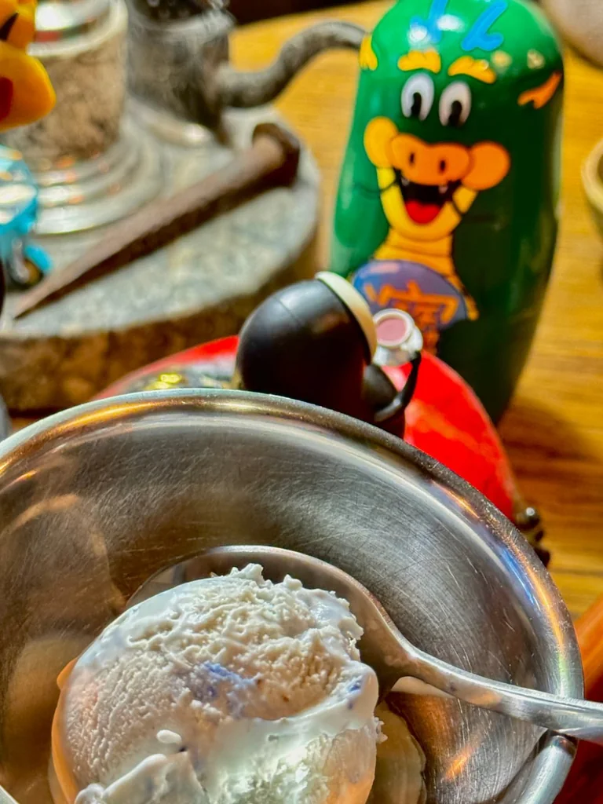
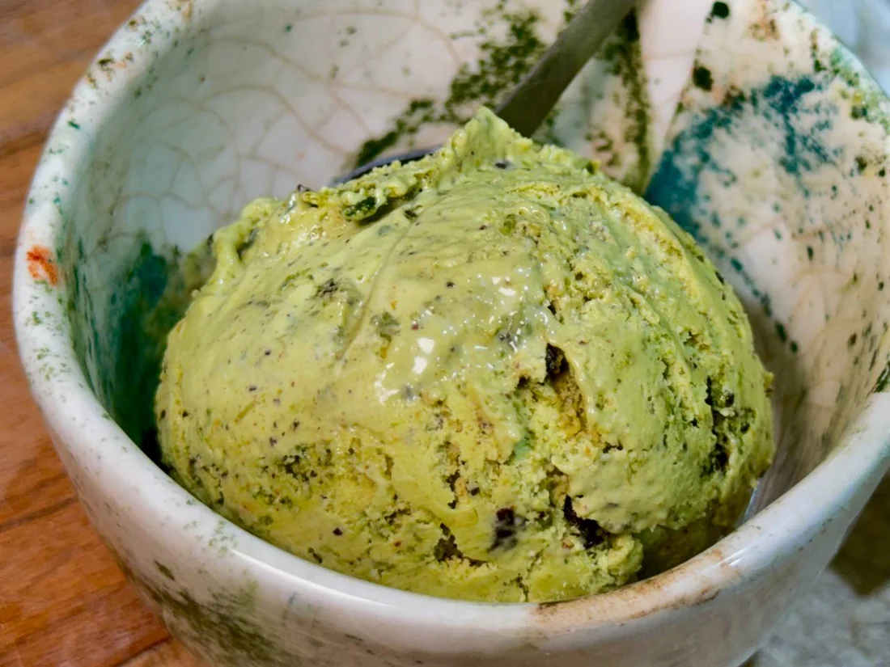
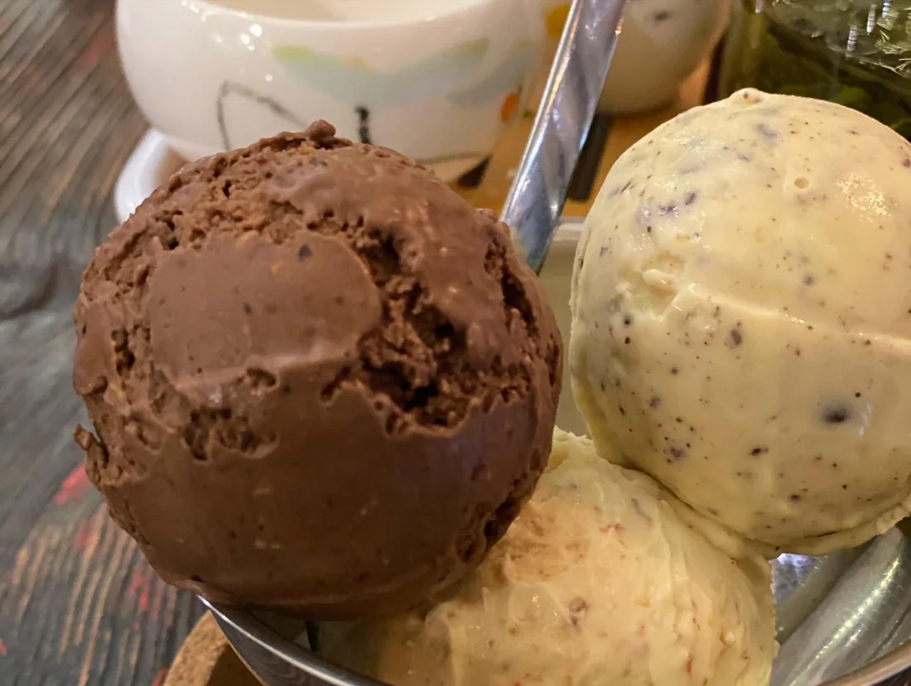

Чайное мороженое
Кунгфу Айскрим готовят в «Чайной высоте» с апреля 2006 года. Чайный шеф Виктор Енин подбирает чай к ягодам, орехам и пряностям так, чтобы его вкус сохранялся в десерте.

№141 · сверхпломбир
Блин наизнанку

№162 · маття и фисташка
Изумрудная сладость пустыни

Пуэр · грибы · фундук